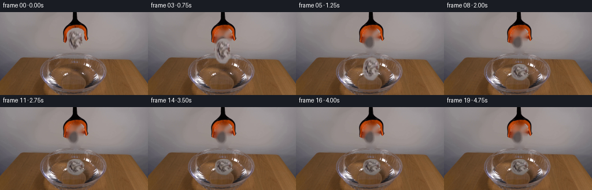
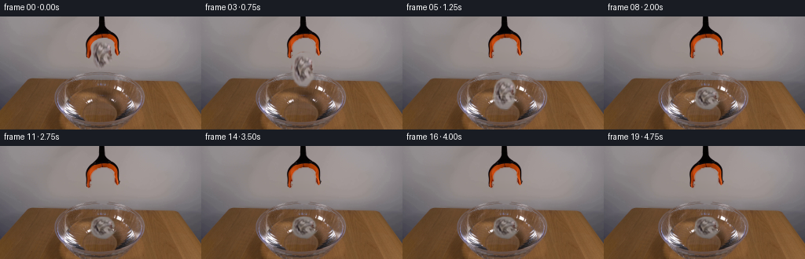
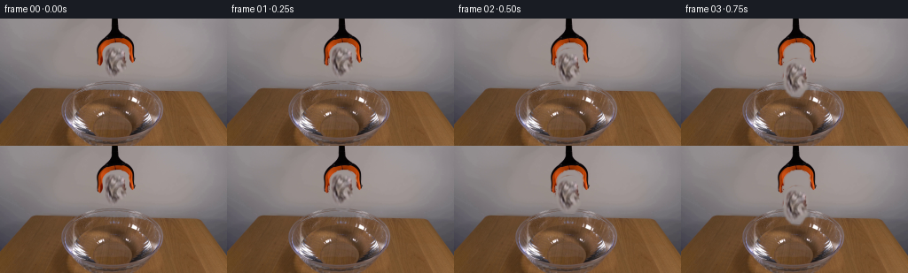
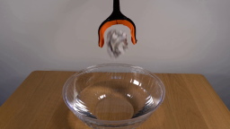
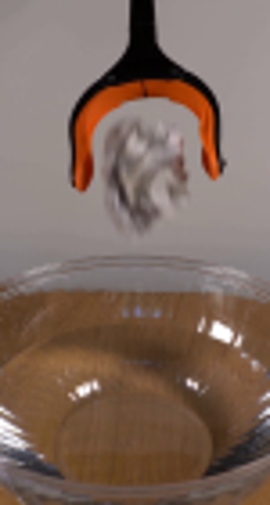
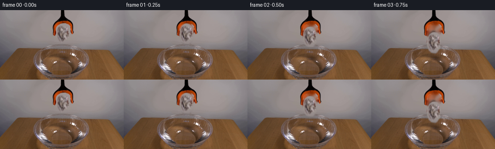
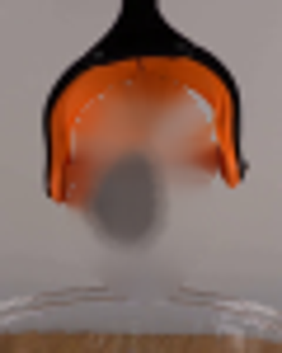
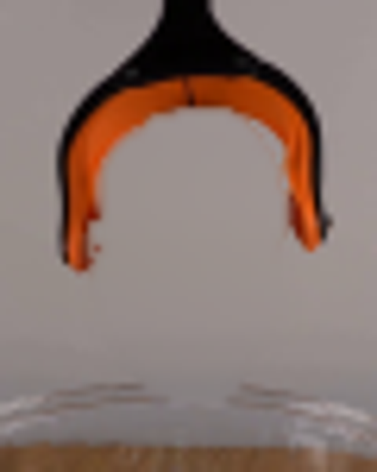

CODING AGENTS AS PIXEL WORLD MODELS
traex/GPT-5.6-Sol · 0134
点击播放 · 原生 RGB 像素
逐轮保存的候选
回放视频、检查图与代码变化。
每份候选均可单独播放。实际图片检查记录在下方工具轨迹中。
候选 01播放与检查图
点击播放 · 原生 RGB 像素

展开代码变化
--- 上一保存版本
+++ 本次保存版本
@@ -0,0 +1,204 @@
+from pathlib import Path
+import math
+import numpy as np
+import cv2
+from PIL import Image
+import artifact_io
+
+HERE = Path(__file__).resolve().parent
+W, H = 256, 144
+
+
+def feathered_polygon(shape, points, blur=1.15):
+ m = np.zeros(shape, np.uint8)
+ cv2.fillPoly(m, [np.asarray(points, np.int32)], 255, lineType=cv2.LINE_AA)
+ if blur:
+ m = cv2.GaussianBlur(m, (0, 0), blur)
+ return m
+
+
+def alpha_over(dst, src, alpha):
+ a = alpha.astype(np.float32)[..., None] / 255.0
+ return np.clip(src.astype(np.float32) * a + dst.astype(np.float32) * (1-a), 0, 255).astype(np.uint8)
+
+
+def ellipse_layer(frame, center, axes, color, opacity, thickness=1, angle=0):
+ """Antialiased, translucent ellipse."""
+ scale = 4
+ h, w = frame.shape[:2]
+ lay = np.zeros((h*scale, w*scale), np.uint8)
+ cv2.ellipse(lay, (round(center[0]*scale), round(center[1]*scale)),
+ (max(1, round(axes[0]*scale)), max(1, round(axes[1]*scale))),
+ angle, 0, 360, int(opacity), max(1, round(thickness*scale)), cv2.LINE_AA)
+ lay = cv2.resize(lay, (w, h), interpolation=cv2.INTER_AREA)
+ # Surface of the water, safely inside the glass bowl.
+ yy, xx = np.ogrid[:h, :w]
+ water = ((xx-128.0)/51.0)**2 + ((yy-104.0)/20.5)**2 <= 1.0
+ lay[~water] = 0
+ solid = np.empty_like(frame); solid[:] = color
+ return alpha_over(frame, solid, lay)
+
+
+def build_clean_and_paper(source):
+ # A soft irregular silhouette around the photographed crumpled paper.
+ pts = [(128,27),(136,29),(141,36),(143,44),(141,51),(143,58),
+ (138,66),(134,71),(126,70),(120,65),(117,58),(116,49),
+ (117,40),(120,33),(124,29)]
+ silhouette = feathered_polygon((H,W), pts, 0.75)
+
+ # Orange and black belong to the gripper, not to the paper cutout.
+ bgr = cv2.cvtColor(source, cv2.COLOR_RGB2BGR)
+ rgb = source
+ orange = (rgb[:,:,0] > 120) & (rgb[:,:,0] > rgb[:,:,1]*1.45) & (rgb[:,:,1] < 125)
+ black = (rgb.max(axis=2) < 55)
+ paper_alpha = silhouette.copy()
+ paper_alpha[orange | black] = 0
+ paper_alpha = cv2.GaussianBlur(paper_alpha, (0,0), .45)
+
+ # Remove only the paper. TELEA reconstructs the gently shaded gray wall
+ # from all sides while preserving the orange jaw immediately above it.
+ erase = (silhouette > 25).astype(np.uint8)*255
+ erase[orange | black] = 0
+ erase = cv2.dilate(erase, np.ones((3,3),np.uint8), iterations=1)
+ erase[orange | black] = 0
+ clean_bgr = cv2.inpaint(bgr, erase, 5, cv2.INPAINT_TELEA)
+ clean = cv2.cvtColor(clean_bgr, cv2.COLOR_BGR2RGB)
+
+ # The inpainted wall must remain very quiet: blend in a local planar wall
+ # estimate in the middle of the opening, keeping the boundary feathered.
+ inner = feathered_polygon((H,W), [(123,31),(136,32),(140,40),(140,59),
+ (135,67),(126,68),(120,59),(119,41)], 2.0)
+ yy = np.arange(H)[:,None]
+ # average wall samples from both sides, row by row
+ left = source[:,104:110].mean(axis=1)
+ right = source[:,151:157].mean(axis=1)
+ wallrow = ((left+right)/2.0)[:,None,:]
+ wall = np.repeat(wallrow, W, axis=1).astype(np.uint8)
+ clean = alpha_over(clean, wall, (inner.astype(np.float32)*0.38).astype(np.uint8))
+
+ # Crop with margin around the actual source object.
+ x0,y0,x1,y1 = 112,24,149,74
+ return clean, source[y0:y1,x0:x1].copy(), paper_alpha[y0:y1,x0:x1].copy(), (x0,y0,x1,y1)
+
+
+def place_paper(frame, tex, alpha, center, angle=0, sx=1.0, sy=1.0, wet=0.0):
+ ph,pw = alpha.shape
+ # Lightly darken/desaturate a wetted paper while retaining the source folds.
+ work = tex.astype(np.float32)
+ if wet > 0:
+ gray = work.mean(axis=2, keepdims=True)
+ work = work*(1-.20*wet) + gray*(.06*wet)
+ work[:,:,2] *= (1-.025*wet)
+ work = np.clip(work,0,255).astype(np.uint8)
+
+ # Affine from crop coordinates into the full frame, rotating about crop center.
+ th = math.radians(angle); c,s = math.cos(th),math.sin(th)
+ A = np.array([[sx*c, -sy*s], [sx*s, sy*c]], np.float32)
+ src_c = np.array([pw/2, ph/2], np.float32)
+ target_c = np.array(center, np.float32)
+ M = np.zeros((2,3), np.float32); M[:,:2] = A; M[:,2] = target_c - A@src_c
+ warped_tex = cv2.warpAffine(work, M, (W,H), flags=cv2.INTER_CUBIC,
+ borderMode=cv2.BORDER_CONSTANT, borderValue=(0,0,0))
+ warped_a = cv2.warpAffine(alpha, M, (W,H), flags=cv2.INTER_LINEAR,
+ borderMode=cv2.BORDER_CONSTANT, borderValue=0)
+
+ # A narrow contact-darkening at the low edge makes the water interaction legible.
+ if wet > 0:
+ ys = np.indices((H,W))[0]
+ edge = np.clip((ys-(center[1]+3))/11.0,0,1)
+ dark_a = (warped_a.astype(np.float32)*edge*0.16*wet).astype(np.uint8)
+ dark = np.zeros_like(frame); dark[:] = (61,58,55)
+ warped_tex = alpha_over(warped_tex, dark, dark_a)
+ return alpha_over(frame, warped_tex, warped_a), warped_a
+
+
+def add_soft_shadow(frame, center, rx, ry, opacity):
+ m = np.zeros((H,W),np.uint8)
+ cv2.ellipse(m,(round(center[0]),round(center[1])),(round(rx),round(ry)),0,0,360,opacity,-1,cv2.LINE_AA)
+ m=cv2.GaussianBlur(m,(0,0),2.2)
+ dark=np.zeros_like(frame); dark[:]=(50,42,34)
+ return alpha_over(frame,dark,m)
+
+
+def generate():
+ source = np.asarray(Image.open(HERE/'first_frame.png').convert('RGB'), dtype=np.uint8)
+ clean, paper_tex, paper_alpha, _ = build_clean_and_paper(source)
+ frames = [source.copy()]
+
+ # Centers follow accelerating free fall, then a small damped buoyant bob.
+ centers = {
+ 1:(130.0,49.0), 2:(129.6,55.5), 3:(130.2,67.0), 4:(129.4,83.0),
+ 5:(130.2,98.0), 6:(130.9,103.0), 7:(131.4,104.0)
+ }
+ angles = {1:0.8,2:-1.5,3:2.0,4:-3.0,5:4.0,6:5.0,7:4.0}
+
+ for i in range(1,20):
+ f = clean.copy()
+
+ # Ripples start at impact. Alternating faint light and dark arcs mimic
+ # reflections already present on the transparent bowl.
+ if i >= 5:
+ age = i-5
+ if age <= 7:
+ r = 7.0 + age*6.7
+ amp = max(0, 35-age*4)
+ f = ellipse_layer(f,(130,102.5),(r, max(1.8,r*.26)),(226,224,220),amp,0.75)
+ f = ellipse_layer(f,(130,103.2),(r+2.0,max(2.0,r*.26)+.8),(70,62,54),max(0,amp//2),0.65)
+ if 1 <= age <= 10:
+ r2 = 5.0 + (age-1)*4.9
+ amp2=max(0,25-age*2)
+ f = ellipse_layer(f,(130,103),(r2,max(1.5,r2*.25)),(240,238,232),amp2,.62)
+
+ if i <= 7:
+ cx,cy=centers[i]
+ if i < 5:
+ sx=1.0; sy=1.0; wet=0.0
+ elif i==5:
+ sx=1.01; sy=.91; wet=.18
+ elif i==6:
+ sx=1.05; sy=.73; wet=.43
+ else:
+ sx=1.07; sy=.66; wet=.58
+ angle=angles[i]
+ else:
+ t=i-7
+ decay=math.exp(-t/4.3)
+ cx=131.2 + .75*math.sin(t*.95)*decay
+ cy=103.4 + 1.05*math.cos(t*1.28)*decay
+ angle=3.3 + 1.2*math.sin(t*.62)*decay
+ sx=1.07 + .015*(1-math.exp(-t/4))
+ sy=.66 - .025*(1-math.exp(-t/5))
+ wet=min(.88,.58+.035*t)
+
+ # Approaching the water, the paper casts a compact diffuse shadow.
+ if i in (4,5):
+ proximity = .45 if i==4 else .75
+ f=add_soft_shadow(f,(cx,104),9+2*proximity,2.2+proximity,round(22*proximity))
+
+ f, pa = place_paper(f,paper_tex,paper_alpha,(cx,cy),angle,sx,sy,wet)
+
+ # Fine bright contact arcs in front of the paper at impact only.
+ if i in (5,6):
+ f=ellipse_layer(f,(130,104),(16+(i-5)*5,4.0+(i-5)),(244,242,237),28-(i-5)*8,.7)
+
+ # Restore strong highlights of the front glass lip where it optically
+ # occludes the floating object's lowest edge.
+ if i >= 6:
+ yy,xx=np.ogrid[:H,:W]
+ lip_zone=(((xx-128)/58.0)**2+((yy-113)/17.0)**2 <= 1) & (yy>=113)
+ bright=(source.max(axis=2)>188) & ((source.max(axis=2)-source.min(axis=2))<55)
+ lip=(lip_zone & bright).astype(np.uint8)*175
+ lip=cv2.GaussianBlur(lip,(0,0),.35)
+ f=alpha_over(f,source,lip)
+
+ frames.append(f)
+
+ arr=np.stack(frames).astype(np.uint8)
+ # Contract-critical exact first frame.
+ arr[0]=source
+ artifact_io.save(arr,HERE)
+ return arr
+
+
+if __name__ == '__main__':
+ generate()
候选 02播放与检查图
点击播放 · 原生 RGB 像素


展开代码变化
--- 上一保存版本
+++ 本次保存版本
@@ -51,30 +51,34 @@
rgb = source
orange = (rgb[:,:,0] > 120) & (rgb[:,:,0] > rgb[:,:,1]*1.45) & (rgb[:,:,1] < 125)
black = (rgb.max(axis=2) < 55)
+ yy, xx = np.indices((H, W))
+ # Only the top and outside black pixels are the tool. Dark pixels farther
+ # down in the opening are folds and self-shadow on the crumpled paper.
+ tool_black = black & ((yy < 29) | (xx < 115) | (xx > 144))
paper_alpha = silhouette.copy()
- paper_alpha[orange | black] = 0
+ paper_alpha[orange | tool_black | (yy < 27)] = 0
paper_alpha = cv2.GaussianBlur(paper_alpha, (0,0), .45)
# Remove only the paper. TELEA reconstructs the gently shaded gray wall
# from all sides while preserving the orange jaw immediately above it.
erase = (silhouette > 25).astype(np.uint8)*255
- erase[orange | black] = 0
+ erase[orange | tool_black | (yy < 27)] = 0
erase = cv2.dilate(erase, np.ones((3,3),np.uint8), iterations=1)
- erase[orange | black] = 0
+ erase[orange | tool_black | (yy < 27)] = 0
clean_bgr = cv2.inpaint(bgr, erase, 5, cv2.INPAINT_TELEA)
clean = cv2.cvtColor(clean_bgr, cv2.COLOR_BGR2RGB)
- # The inpainted wall must remain very quiet: blend in a local planar wall
- # estimate in the middle of the opening, keeping the boundary feathered.
- inner = feathered_polygon((H,W), [(123,31),(136,32),(140,40),(140,59),
- (135,67),(126,68),(120,59),(119,41)], 2.0)
- yy = np.arange(H)[:,None]
- # average wall samples from both sides, row by row
- left = source[:,104:110].mean(axis=1)
- right = source[:,151:157].mean(axis=1)
- wallrow = ((left+right)/2.0)[:,None,:]
- wall = np.repeat(wallrow, W, axis=1).astype(np.uint8)
- clean = alpha_over(clean, wall, (inner.astype(np.float32)*0.38).astype(np.uint8))
+ # Build an untextured continuation of the real wall from row-matched
+ # samples on both sides. This completely eliminates inpainting ghosts,
+ # but only under the original paper silhouette.
+ left = source[:,98:105].mean(axis=1).astype(np.float32)
+ right = source[:,153:160].mean(axis=1).astype(np.float32)
+ mix = np.clip((np.arange(W, dtype=np.float32)-102.0)/55.0, 0, 1)[None,:,None]
+ wall = left[:,None,:]*(1-mix) + right[:,None,:]*mix
+ wall = cv2.GaussianBlur(wall.astype(np.uint8),(0,0),1.0)
+ replace = cv2.GaussianBlur(erase,(0,0),.75)
+ replace[orange | tool_black | (yy < 27)] = 0
+ clean = alpha_over(clean, wall, replace)
# Crop with margin around the actual source object.
x0,y0,x1,y1 = 112,24,149,74
可观测工具轨迹
实际执行的命令与返回图片。
命令 1exit 0
/bin/bash -lc "cat prompt.txt && printf '\\n--- GENERATION_RULES.md ---\\n' && cat GENERATION_RULES.md"
命令 2exit 0
/bin/bash -lc "find . -maxdepth 2 -type f -printf '%p\\n' | sort && printf '\\nTools:\\n' && command -v ffmpeg && command -v python3 && command -v convert || true"
命令 3exit 0
/bin/bash -lc "sed -n '1,240p' artifact_io.py"
命令 4exit 0
/bin/bash -lc "python3 - <<'PY'
from PIL import Image
im=Image.open('first_frame.png'); print(im.mode,im.size)
PY"命令 5exit 0
/bin/bash -lc "python3 - <<'PY' mods=['numpy','PIL','cv2','scipy','imageio','matplotlib'] for m in mods: try: q=__import__(m); print(m,'OK',getattr(q,'__version__','')) except Exception as e: print(m,'NO',e) PY"
命令 6exit 0
/bin/bash -lc "python3 - <<'PY'
from PIL import Image
im=Image.open('first_frame.png')
im.crop((90,0,165,140)).resize((450,840)).save('.tmp/detail.png')
PY"命令 7exit 0
/bin/bash -lc "cat > generate.py <<'PY'
from pathlib import Path
import math
import numpy as np
import cv2
from PIL import Image
import artifact_io
HERE = Path(__file__).resolve().parent
W, H = 256, 144
def feathered_polygon(shape, points, blur=1.15):
m = np.zeros(shape, np.uint8)
cv2.fillPoly(m, [np.asarray(points, np.int32)], 255, lineType=cv2.LINE_AA)
if blur:
m = cv2.GaussianBlur(m, (0, 0), blur)
return m
def alpha_over(dst, src, alpha):
a = alpha.astype(np.float32)[..., None] / 255.0
return np.clip(src.astype(np.float32) * a + dst.astype(np.float32) * (1-a), 0, 255).astype(np.uint8)
def ellipse_layer(frame, center, axes, color, opacity, thickness=1, angle=0):
\"\"\"Antialiased, translucent ellipse.\"\"\"
scale = 4
h, w = frame.shape[:2]
lay = np.zeros((h*scale, w*scale), np.uint8)
cv2.ellipse(lay, (round(center[0]*scale), round(center[1]*scale)),
(max(1, round(axes[0]*scale)), max(1, round(axes[1]*scale))),
angle, 0, 360, int(opacity), max(1, round(thickness*scale)), cv2.LINE_AA)
lay = cv2.resize(lay, (w, h), interpolation=cv2.INTER_AREA)
# Surface of the water, safely inside the glass bowl.
yy, xx = np.ogrid[:h, :w]
water = ((xx-128.0)/51.0)**2 + ((yy-104.0)/20.5)**2 <= 1.0
lay[~water] = 0
solid = np.empty_like(frame); solid[:] = color
return alpha_over(frame, solid, lay)
def build_clean_and_paper(source):
# A soft irregular silhouette around the photographed crumpled paper.
pts = [(128,27),(136,29),(141,36),(143,44),(141,51),(143,58),
(138,66),(134,71),(126,70),(120,65),(117,58),(116,49),
(117,40),(120,33),(124,29)]
silhouette = feathered_polygon((H,W), pts, 0.75)
# Orange and black belong to the gripper, not to the paper cutout.
bgr = cv2.cvtColor(source, cv2.COLOR_RGB2BGR)
rgb = source
orange = (rgb[:,:,0] > 120) & (rgb[:,:,0] > rgb[:,:,1]*1.45) & (rgb[:,:,1] < 125)
black = (rgb.max(axis=2) < 55)
paper_alpha = silhouette.copy()
paper_alpha[orange | black] = 0
paper_alpha = cv2.GaussianBlur(paper_alpha, (0,0), .45)
# Remove only the paper. TELEA reconstructs the gently shaded gray wall
# from all sides while preserving the orange jaw immediately above it.
erase = (silhouette > 25).astype(np.uint8)*255
erase[orange | black] = 0
erase = cv2.dilate(erase, np.ones((3,3),np.uint8), iterations=1)
erase[orange | black] = 0
clean_bgr = cv2.inpaint(bgr, erase, 5, cv2.INPAINT_TELEA)
clean = cv2.cvtColor(clean_bgr, cv2.COLOR_BGR2RGB)
# The inpainted wall must remain very quiet: blend in a local planar wall
# estimate in the middle of the opening, keeping the boundary feathered.
inner = feathered_polygon((H,W), [(123,31),(136,32),(140,40),(140,59),
(135,67),(126,68),(120,59),(119,41)], 2.0)
yy = np.arange(H)[:,None]
# average wall samples from both sides, row by row
left = source[:,104:110].mean(axis=1)
right = source[:,151:157].mean(axis=1)
wallrow = ((left+right)/2.0)[:,None,:]
wall = np.repeat(wallrow, W, axis=1).astype(np.uint8)
clean = alpha_over(clean, wall, (inner.astype(np.float32)*0.38).astype(np.uint8))
# Crop with margin around the actual source object.
x0,y0,x1,y1 = 112,24,149,74
return clean, source[y0:y1,x0:x1].copy(), paper_alpha[y0:y1,x0:x1].copy(), (x0,y0,x1,y1)
def place_paper(frame, tex, alpha, center, angle=0, sx=1.0, sy=1.0, wet=0.0):
ph,pw = alpha.shape
# Lightly darken/desaturate a wetted paper while retaining the source folds.
work = tex.astype(np.float32)
if wet > 0:
gray = work.mean(axis=2, keepdims=True)
work = work*(1-.20*wet) + gray*(.06*wet)
work[:,:,2] *= (1-.025*wet)
work = np.clip(work,0,255).astype(np.uint8)
# Affine from crop coordinates into the full frame, rotating about crop center.
th = math.radians(angle); c,s = math.cos(th),math.sin(th)
A = np.array([[sx*c, -sy*s], [sx*s, sy*c]], np.float32)
src_c = np.array([pw/2, ph/2], np.float32)
target_c = np.array(center, np.float32)
M = np.zeros((2,3), np.float32); M[:,:2] = A; M[:,2] = target_c - A@src_c
warped_tex = cv2.warpAffine(work, M, (W,H), flags=cv2.INTER_CUBIC,
borderMode=cv2.BORDER_CONSTANT, borderValue=(0,0,0))
warped_a = cv2.warpAffine(alpha, M, (W,H), flags=cv2.INTER_LINEAR,
borderMode=cv2.BORDER_CONSTANT, borderValue=0)
# A narrow contact-darkening at the low edge makes the water interaction legible.
if wet > 0:
ys = np.indices((H,W))[0]
edge = np.clip((ys-(center[1]+3))/11.0,0,1)
dark_a = (warped_a.astype(np.float32)*edge*0.16*wet).astype(np.uint8)
dark = np.zeros_like(frame); dark[:] = (61,58,55)
warped_tex = alpha_over(warped_tex, dark, dark_a)
return alpha_over(frame, warped_tex, warped_a), warped_a
def add_soft_shadow(frame, center, rx, ry, opacity):
m = np.zeros((H,W),np.uint8)
cv2.ellipse(m,(round(center[0]),round(center[1])),(round(rx),round(ry)),0,0,360,opacity,-1,cv2.LINE_AA)
m=cv2.GaussianBlur(m,(0,0),2.2)
dark=np.zeros_like(frame); dark[:]=(50,42,34)
return alpha_over(frame,dark,m)
def generate():
source = np.asarray(Image.open(HERE/'first_frame.png').convert('RGB'), dtype=np.uint8)
clean, paper_tex, paper_alpha, _ = build_clean_and_paper(source)
frames = [source.copy()]
# Centers follow accelerating free fall, then a small damped buoyant bob.
centers = {
1:(130.0,49.0), 2:(129.6,55.5), 3:(130.2,67.0), 4:(129.4,83.0),
5:(130.2,98.0), 6:(130.9,103.0), 7:(131.4,104.0)
}
angles = {1:0.8,2:-1.5,3:2.0,4:-3.0,5:4.0,6:5.0,7:4.0}
for i in range(1,20):
f = clean.copy()
# Ripples start at impact. Alternating faint light and dark arcs mimic
# reflections already present on the transparent bowl.
if i >= 5:
age = i-5
if age <= 7:
r = 7.0 + age*6.7
amp = max(0, 35-age*4)
f = ellipse_layer(f,(130,102.5),(r, max(1.8,r*.26)),(226,224,220),amp,0.75)
f = ellipse_layer(f,(130,103.2),(r+2.0,max(2.0,r*.26)+.8),(70,62,54),max(0,amp//2),0.65)
if 1 <= age <= 10:
r2 = 5.0 + (age-1)*4.9
amp2=max(0,25-age*2)
f = ellipse_layer(f,(130,103),(r2,max(1.5,r2*.25)),(240,238,232),amp2,.62)
if i <= 7:
cx,cy=centers[i]
if i < 5:
sx=1.0; sy=1.0; wet=0.0
elif i==5:
sx=1.01; sy=.91; wet=.18
elif i==6:
sx=1.05; sy=.73; wet=.43
else:
sx=1.07; sy=.66; wet=.58
angle=angles[i]
else:
t=i-7
decay=math.exp(-t/4.3)
cx=131.2 + .75*math.sin(t*.95)*decay
cy=103.4 + 1.05*math.cos(t*1.28)*decay
angle=3.3 + 1.2*math.sin(t*.62)*decay
sx=1.07 + .015*(1-math.exp(-t/4))
sy=.66 - .025*(1-math.exp(-t/5))
wet=min(.88,.58+.035*t)
# Approaching the water, the paper casts a compact diffuse shadow.
if i in (4,5):
proximity = .45 if i==4 else .75
f=add_soft_shadow(f,(cx,104),9+2*proximity,2.2+proximity,round(22*proximity))
f, pa = place_paper(f,paper_tex,paper_alpha,(cx,cy),angle,sx,sy,wet)
# Fine bright contact arcs in front of the paper at impact only.
if i in (5,6):
f=ellipse_layer(f,(130,104),(16+(i-5)*5,4.0+(i-5)),(244,242,237),28-(i-5)*8,.7)
# Restore strong highlights of the front glass lip where it optically
# occludes the floating object's lowest edge.
if i >= 6:
yy,xx=np.ogrid[:H,:W]
lip_zone=(((xx-128)/58.0)**2+((yy-113)/17.0)**2 <= 1) & (yy>=113)
bright=(source.max(axis=2)>188) & ((source.max(axis=2)-source.min(axis=2))<55)
lip=(lip_zone & bright).astype(np.uint8)*175
lip=cv2.GaussianBlur(lip,(0,0),.35)
f=alpha_over(f,source,lip)
frames.append(f)
arr=np.stack(frames).astype(np.uint8)
# Contract-critical exact first frame.
arr[0]=source
artifact_io.save(arr,HERE)
return arr
if __name__ == '__main__':
generate()
PY
python3 generate.py
python3 - <<'PY'
import numpy as np
from PIL import Image
z=np.load('pixels.npz')['pixels']
f=np.array(Image.open('first_frame.png')).astype(np.uint32)
p=(f[:,:,0]<<16)|(f[:,:,1]<<8)|f[:,:,2]
print('pixels',z.shape,z.dtype,'frame0 exact',np.array_equal(z[:,:,0],p))
PY"命令 8exit 0
/bin/bash -lc "python3 - <<'PY'
import generate
from PIL import Image
import numpy as np
s=np.array(Image.open('first_frame.png'))
c,*_=generate.build_clean_and_paper(s)
Image.fromarray(c).crop((100,10,160,85)).resize((480,600)).save('.tmp/clean_detail.png')
PY"命令 9exit 0
/bin/bash -lc "python3 generate.py && python3 - <<'PY'
import generate
from PIL import Image
import numpy as np
s=np.array(Image.open('first_frame.png'))
c,*_=generate.build_clean_and_paper(s)
Image.fromarray(c).crop((100,10,160,85)).resize((480,600)).save('.tmp/clean_detail2.png')
PY"命令 10exit 0
/bin/bash -lc "python3 - <<'PY'
from pathlib import Path
import numpy as np
from PIL import Image
root=Path('.')
z=np.load(root/'pixels.npz')['pixels']
s=np.asarray(Image.open(root/'first_frame.png').convert('RGB'),dtype=np.uint8)
p=(s[:,:,0].astype(np.uint32)<<16)|(s[:,:,1].astype(np.uint32)<<8)|s[:,:,2].astype(np.uint32)
assert z.shape==(144,256,20), z.shape
assert z.dtype==np.uint32
assert np.array_equal(z[:,:,0],p)
files=sorted((root/'frames').glob('*.png'))
assert len(files)==20
for q in files:
im=Image.open(q); assert im.mode=='RGB' and im.size==(256,144)
print('PASS: 20 RGB frames, 256x144, frame 00 pixel-identical')
print('outputs:', *(str(x) for x in ['pixels.npz','index.html','inspection.png']))
PY"命令 11exit 0
/bin/bash -lc "python3 -m py_compile generate.py artifact_io.py && test -s index.html && test -s pixels.npz && echo 'PASS: generator runnable and artifacts present'"
视觉工具实际返回图片 1

视觉工具实际返回图片 2

视觉工具实际返回图片 3

视觉工具实际返回图片 4

视觉工具实际返回图片 5

视觉工具实际返回图片 6

视觉工具实际返回图片 7

保存候选 2 份；完成命令 11 次；可验证图片返回 7 张。原始 API 响应与完整日志保留在本地。